mean(1:5)
## [1] 3Week 3 FAQs
FAQs
Hi everyone!
Great work with session 3! You’re all done with the primers and from now on, the lessons should be a lot shorter. The first few sessions of this class are rough because you’re learning the foundations of R and ggplot, but things really truly should start clicking more now—I promise!
Many of you had similar questions and I left lots of similar comments and tips on iCollege, so I’ve compiled the most common issues here. There are a bunch here, but they’re hopefully all useful.
What’s the difference between the |> and %>% pipes?
They both do the same thing—take the thing on the left side of the pipe and feed it as the first argument to the function on the right side of the pipe. 99% of the time they’re interchangeable. |> is the native pipe and is part of R—you don’t need to load any packages to use it. The %>% is not native and requires you to load a package (typically tidyverse) to use it.
Why can we sometimes do ggplot(dataset) and sometimes dataset |> ggplot()?
Remember that the pipe takes the thing on the left side and feeds is as the first argument to the function on the right side. This means that you can do all sorts of rearranging of data and functions.
For instance, you can find the average of the numbers 1–5 like this:
Or you could do the same thing like this:
1:5 |> mean()
## [1] 3↑ That feels weird, but it’s completely valid. It means “take the numbers 1–5 and feed them as the first argument to mean()”.
This happens all the time with other things too! If you’re plotting the lotr data, you could do this:
ggplot(lotr, ...) +
geom_whatever()Or you could do this:
lotr |>
ggplot(...) +
geom_whatever()Those two approaches are identical.
The second option with the |> is helpful if you want to do something to the data before you plot it, like filtering or mutating:
lotr |>
filter(Species == "Elf") |>
ggplot(...) +
geom_whatever()Why do we sometimes combine code with + and sometimes with |>?
This is tricky!
tl;dr: + is only for ggplot plotting. |> is for combining several functions.
If you’re combining the results of a bunch of functions, like grouping and summarizing and filtering, you connect these individual steps with the pipe symbol—you’re feeding each step into the next step in the pipeline. If you find yourself using the phrase “and then” (which is the English equivalent of the pipe), like “Take the mpg dataset and then filter it to remove 5 cylinder cars and then group it by cylinder and then calculate the average highway MPG in each cylinder”, use |>:
mpg |>
filter(cyl != 5) |>
group_by(cyl) |>
summarize(avg_mpg = mean(hwy))
## # A tibble: 3 × 2
## cyl avg_mpg
## <int> <dbl>
## 1 4 28.8
## 2 6 22.8
## 3 8 17.6If you’re plotting things with ggplot, you’re adding layers together, not connecting them with pipes:
ggplot(data = mpg, mapping = aes(x = displ, y = hwy, color = drv)) +
geom_point() +
labs(title = "Neato")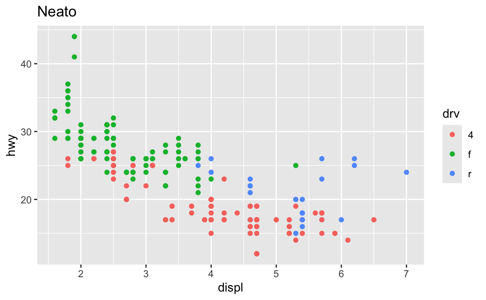
It’s even possible to combine them into a single chain. Note how this uses both |> and +, but only uses + in the ggplot section:
mpg |>
filter(cyl != 5) |>
group_by(cyl) |>
summarize(avg_mpg = mean(hwy)) |>
ggplot(aes(x = factor(cyl), y = avg_mpg)) +
geom_col() +
labs(title = "Average MPG across cylinders")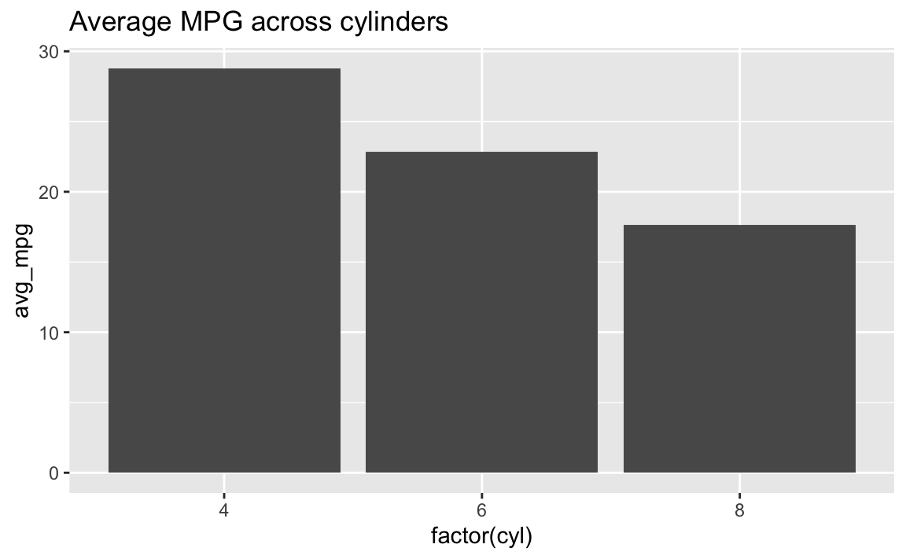
↑ I don’t typically like doing this though, since it’s a little brain-breaking to switch between |> and +. I typically make a smaller dataset and save it as an object and then plot that, like this:
summarized_data <- mpg |>
filter(cyl != 5) |>
group_by(cyl) |>
summarize(avg_mpg = mean(hwy))
ggplot(data = summarized_data, aes(x = factor(cyl), y = avg_mpg)) +
geom_col() +
labs(title = "Average MPG across cylinders")Why doesn’t group_by(species) work but group_by(Species) does?
R—like pretty much all other programming languages—is case sensitive. To the computer, species and Species are completely different things. Your code has to match whatever the columns in the data are.
The Environment panel is really helpful for this. If you click on the little blue arrow next to a dataset in the Environment panel, it’ll show you what the columns are called. You could also click on the name of the dataset and open it in a separate tab, which can be helpful, but if I just need to remind myself what the column is called, that blue arrow is perfect.
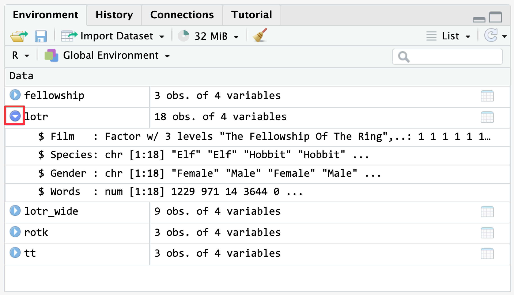
There’s nothing special about having capitalized column names either—they just happen to be capitalized in this one dataset. You could rename them to be lowercase:
lotr |>
rename(species = Species)…or all caps:
lotr |>
rename(SPECIES = Species)…or something else entirely:
lotr |>
rename(fictional_movie_species = Species)All that matters is that you use the names as they appear in the data, matching the case exactly.
Why does aes() sometimes appear in ggplot() and sometimes in geom_WHATEVER()?
These two chunks of code make the exact same plot:
ggplot(data = mpg, mapping = aes(x = displ, y = hwy, color = drv)) +
geom_point()
ggplot(data = mpg) +
geom_point(mapping = aes(x = displ, y = hwy, color = drv))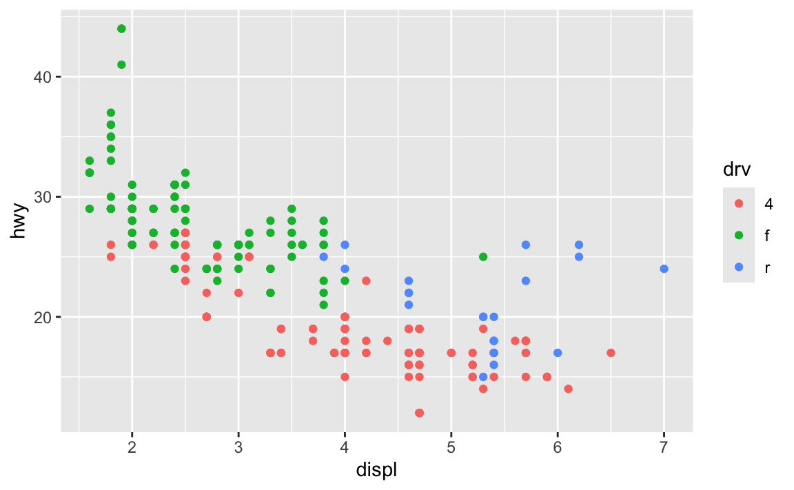
The first has the aesthetic mappings inside ggplot(); the second has them inside geom_point(). Which one is better? Why allow them to be in different places? What’s going on?!
The Primers briefly covered this in a section called “Global vs. local mappings”. The basic principle is that any aesthetic mappings you set in ggplot() apply globaly to all layers that come after while any aesthetic mappings you set in geom_WHATEVER() apply locally only to that geom layer.
If I want to add points and a smoothed line, I could do this:
ggplot(data = mpg) +
geom_point(mapping = aes(x = displ, y = hwy, color = drv)) +
geom_smooth(mapping = aes(x = displ, y = hwy, color = drv))
…but that’s a lot of duplicated code!
Instead, I can set the mapping in ggplot(), and it’ll apply to all the layers:
ggplot(data = mpg, mapping = aes(x = displ, y = hwy, color = drv)) +
geom_point() +
geom_smooth()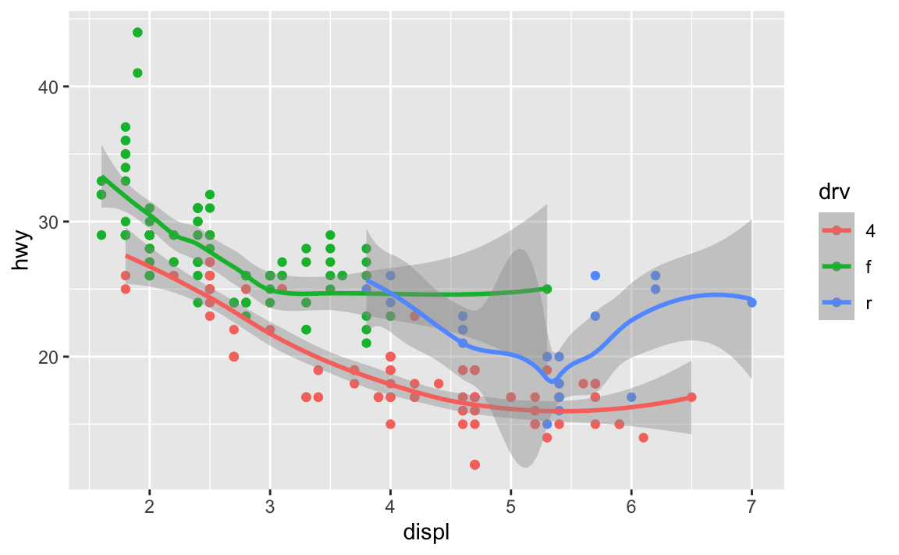
You can still set specific aesthetics for specific geoms. Like, what if I want the points to be colored, but I want a single smoothed line, not three colored ones? I can put color = drv in geom_point() so that geom_smooth() doesn’t use color:
ggplot(data = mpg, mapping = aes(x = displ, y = hwy)) +
geom_point(mapping = aes(color = drv)) +
geom_smooth()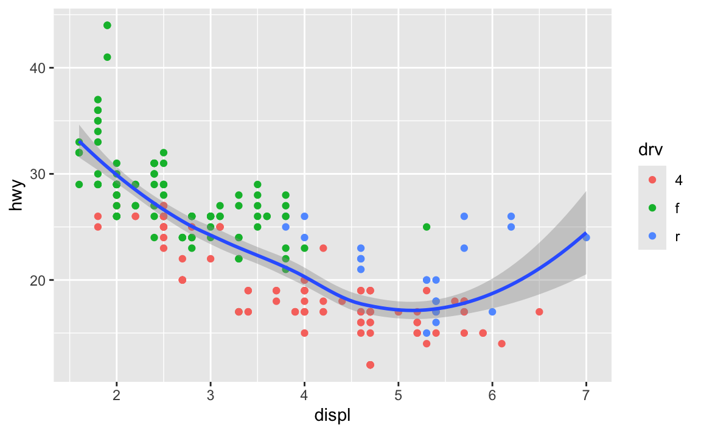
In general it’s good to put your aes() stuff inside ggplot() unless you’re doing specific things with individual geoms.
Installing vs. using packages
One thing that trips often trips people up is the difference between installing and loading a package.
The best analogy I’ve found for this is to think about your phone. When you install an app on your phone, you only do it once. When you want to use that app, you tap on the icon to open it. Install once, use multiple times.
The same thing happens with R. If you look at the Packages panel in RStudio, you’ll see a list of all the different packages installed on your computer. But just because a package is installed doesn’t mean you can automatically start using it—you have to load it in your R session using library(nameofthepackage). Install once, use multiple times.
Every time you restart RStudio and every time you render a Quarto document, R starts with no packages loaded. You’re responsible for loading those in your document. That’s why the beginning of every document typically has a bunch of library() lines, like this:
library(tidyverse)
library(scales)
library(gapminder)As mentioned in this earlier list of tips, make sure you don’t include code to install packages in your Quarto files. Like, don’t include install.packages("ggtext") or whatever. If you do, R will reinstall that package every time you render your document, which is excessive and slow. All you need to do is load the package with library()
To help myself remember to not include package installation code in my document, I make an effort to either install packages with my mouse by clicking on the “Install” button in the Packages panel in RStudio, or only ever typing (or copying/pasting) code like install.packages("whatever") directly in the R console and never putting it in a chunk.
Why are my axis labels all crowded and on top of each other? How do I fix that?
This was a common problem with both the LOTR data and the essential construction data in session 4—categories on the x-axis would often overlap when you render your document. That’s because there’s not enough room to fit them all comfortably in a standard image size. Fortunately there are a few quick and easy ways to fix this, such as changing the width of the image, rotating the labels, dodging the labels, or (my favorite!) automatically adding line breaks to the labels so they don’t overlap. This blog post (by me) has super quick examples of all these different (easy!) approaches.
Why isn’t the example code using data = whatever and mapping = aes() in ggplot() anymore? Do we not have to use argument names?
In the first few sessions, you wrote code that looked like this:
ggplot(data = mpg, mapping = aes(x = displ, y = hwy)) +
geom_point()In R, you feed functions arguments like data and mapping and I was having you explicitly name the arguments, like data = mpg and mapping = aes(...).
In general it’s a good idea to use named arguments, since it’s clearer what you mean.
However, with really common functions like ggplot(), you can actually skip the names. If you look at the documentation for ggplot() (i.e. run ?ggplot in your R console or search for “ggplot” in the Help panel in RStudio), you’ll see that the first expected argument is data and the second is mapping.

If you don’t name the arguments, like this…
ggplot(mpg, aes(x = displ, y = hwy)) +
geom_point()…R will assume that the first argument (mpg) really means data = mpg and that the second really means mapping = aes(...).
If you don’t name the arguments, the order matters. This won’t work because ggplot will think that the aes(...) stuff is really data = aes(...):
ggplot(aes(x = displ, y = hwy), mpg) +
geom_point()If you do name the arguments, the order doesn’t matter. This will work because it’s clear that data = mpg (even though this feels backwards and wrong):
ggplot(mapping = aes(x = displ, y = hwy), data = mpg) +
geom_point()This works with all R functions. You can either name the arguments and put them in whatever order you want, or you can not name them and use them in the order that’s listed in the documentation.
In general, you should name your arguments for the sake of clarity. For instance, with aes(), the first argument is x and the second is y, so you can technically do this:
ggplot(mpg, aes(displ, hwy)) +
geom_point()That’s nice and short, but you have to remember that displ is on the x-axis and hwy is on the y-axis. And it gets extra confusing once you start mapping other columns:
ggplot(mpg, aes(displ, hwy, color = drv, size = hwy)) +
geom_point()All the other aesthetics like color and size are named, but x and y aren’t, which just feels… off.
So use argument names except for super common things like ggplot() and the {dplyr} verbs like mutate(), group_by(), filter(), etc.
What’s the difference between geom_bar() and geom_col()?
In exercise 3, you made lots of bar charts to show the counts of words spoken in The Lord of the Rings movies. To do this, you used geom_col() to add columns to the plots. However, confusingly ggplot has another geom layer named geom_bar(), which you’d understandably think you could use to make a bar chart. If you tried using it, though, it probably didn’t work.
Both geom_col() and geom_bar() make bar graphs, but there’s a subtle difference between the two: with geom_col(), you have to specify both an x and a y aesthetic; with geom_bar(), you only specify an x aesthetic and ggplot automatically figures out the y for you.
Here’s a quick example using the mpg data. Let’s say you want to make a plot that shows the count of cars with different drives (front, rear, and four). With geom_col(), you’re in charge of calculating those totals first before plotting, typically with group_by() |> summarize():
# Get a count of cars by drive
cars_by_drive <- mpg |>
group_by(drv) |>
summarize(total = n())
# Specify both x and y
ggplot(cars_by_drive, aes(x = drv, y = total)) +
geom_col()You can make that same plot with geom_bar() instead and let ggplot handle the counting:
# Use the full dataset and only specify x, not y
ggplot(mpg, aes(x = drv)) +
geom_bar()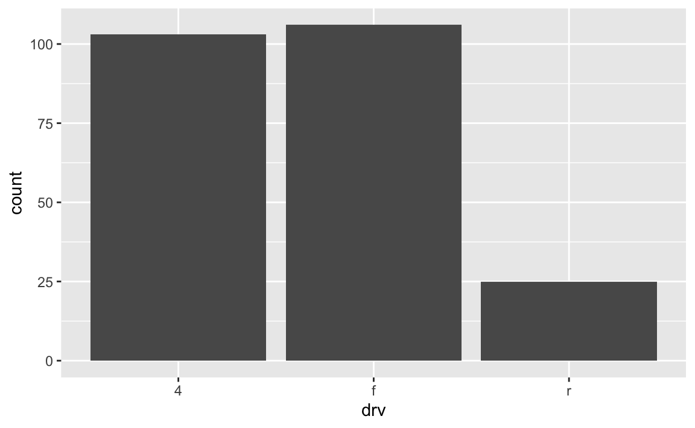
It seems like you’d always want to use geom_bar() since the code is so much shorter and you can outsource a lot of the work to ggplot—there’s no need to use group_by() and summarize() and do extra calculations! But that’s not necessarily the case!
Personally, I prefer to use geom_col() and do my own calculations anyway because it gives me more control over what is getting calculated. For instance, if I want to plot percentages instead of counts, it’s far easier to do that in a separate dataset than somehow hack geom_bar() into showing percents. Or if I want to group by multiple things, it’s easier to do that with group_by() instead of tricking geom_bar() into getting it right. Plus I can look at the intermediate cars_by_drive data before plotting to make sure everything was calculated correctly.
For instance, if I want to find the proportion of car drives across the two different years in the dataset, it’s a lot easier to create my own y variable with group_by() |> summarize() and use geom_col() instead of fiddling around with the automatic settings of geom_bar():
cars_drive_year <- mpg |>
# Make year a categorical variable instead of a number
mutate(year = factor(year)) |>
group_by(drv, year) |>
summarize(total = n()) |>
# Group by year to get the proportions of drives within each year
group_by(year) |>
mutate(prop = total / sum(total))
# Specify x and y and use geom_col()
ggplot(cars_drive_year, aes(x = year, y = prop, fill = drv)) +
geom_col(position = "dodge")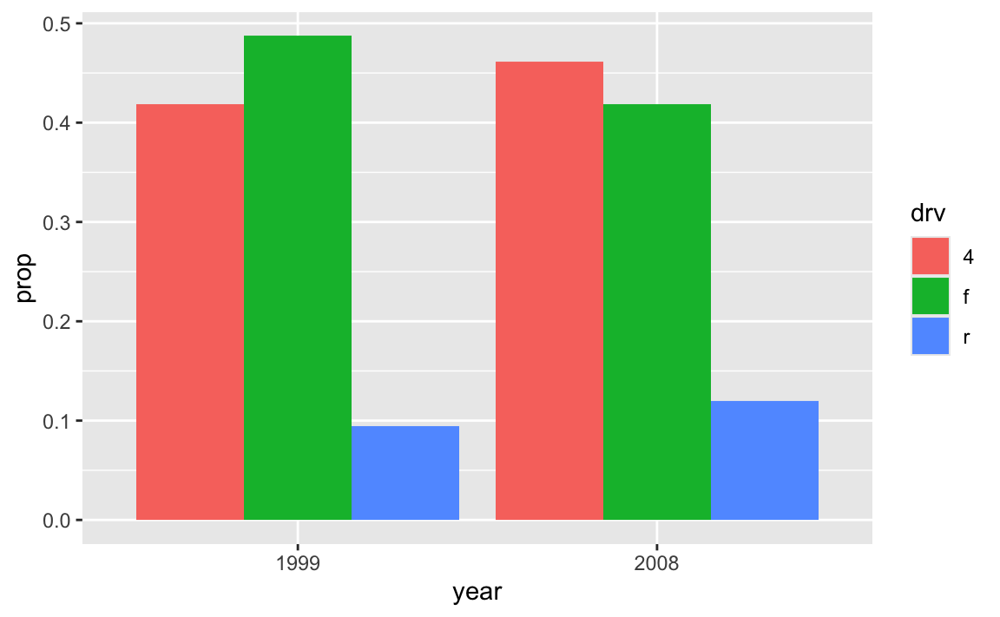
What’s the difference between read_csv() vs. read.csv()?
In all the code I’ve given you in this class, you’ve loaded CSV files using read_csv(), with an underscore. In lots of online examples of R code, and in lots of other peoples’ code, you’ll see read.csv() with a period. They both load CSV files into R, but there are subtle differences between them.
read.csv() (read dot csv) is a core part of R and requires no external pacakges (we say that it’s part of “base R”). It loads CSV files. That’s its job. However, it can be slow with big files, and it can sometimes read text data in as categorical data, which is weird (that’s less of an issue since R 4.0; it was a major headache in the days before R 4.0). It also makes ugly column names when there are “illegal” columns in the CSV file—it replaces all the illegal characters with .s
NoteLegal column names
R technically doesn’t allow column names that (1) have spaces in them or (2) start with numbers.
You can still access or use or create column names that do this if you wrap the names in backticks, like this:
mpg |>
group_by(drv) |>
summarize(`A column with spaces` = mean(hwy))
## # A tibble: 3 × 2
## drv `A column with spaces`
## <chr> <dbl>
## 1 4 19.2
## 2 f 28.2
## 3 r 21read_csv() (read underscore csv) comes from {readr}, which is one of the 9 packages that get loaded when you run library(tidyverse). Think of it as a new and improved version of read.csv(). It handles big files a better, it doesn’t ever read text data in as categorical data, and it does a better job at figuring out what kinds of columns are which (if it detects something that looks like a date, it’ll treat it as a date). It also doesn’t rename any columns—if there are illegal characters like spaces, it’ll keep them for you, which is nice.
Moral of the story: use read_csv() instead of read.csv(). It’s nicer.
What’s the difference between facet_grid() and facet_wrap()?
Both functions create facets, but they do it in different ways. facet_grid() creates a grid with a set number of rows and columns, and it puts the labels of those rows and columns in the strips along the facets. Here’s a little example with data from gapminder.
library(gapminder)
gapminder_small <- gapminder |>
filter(year >= 2000)We can facet with year as columns:
ggplot(gapminder_small, aes(x = gdpPercap, y = lifeExp, color = continent)) +
geom_point() +
guides(color = "none") +
facet_grid(cols = vars(year))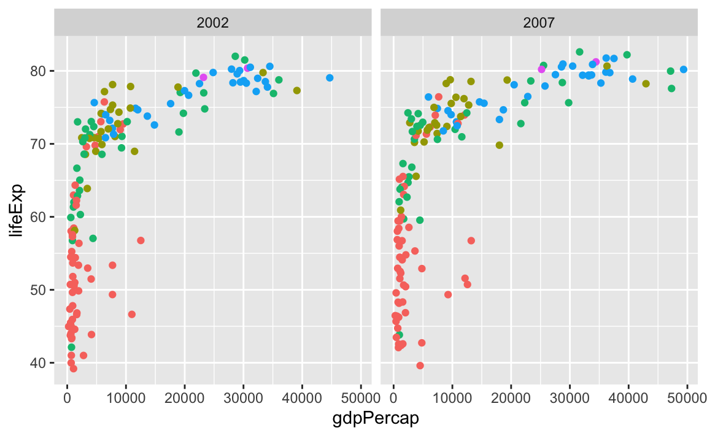
…or year as rows:
ggplot(gapminder_small, aes(x = gdpPercap, y = lifeExp, color = continent)) +
geom_point() +
guides(color = "none") +
facet_grid(rows = vars(year))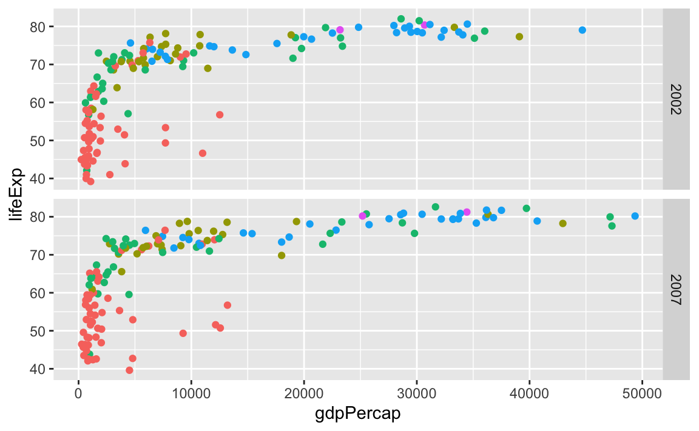
We can even facet with year as rows and continent as columns:
ggplot(gapminder_small, aes(x = gdpPercap, y = lifeExp, color = continent)) +
geom_point() +
guides(color = "none") +
facet_grid(cols = vars(continent), rows = vars(year))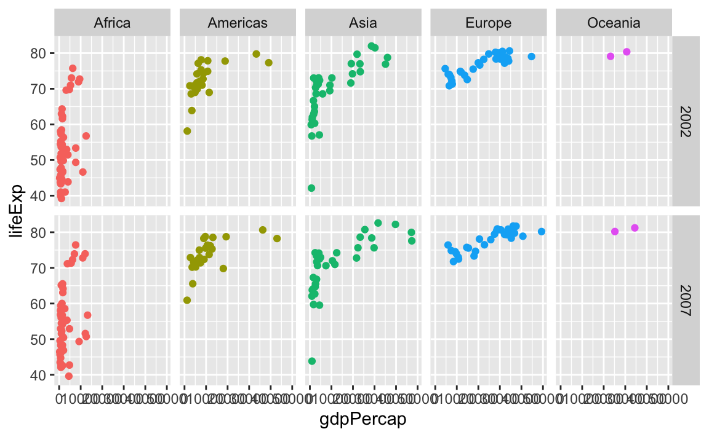
facet_wrap() works a little differently. It lays out each subplot in a line and then moves to the next line once that line gets filled up. Imagine typing text in Word or Google Docs—when you get to the end of the line, the text automatically moves down to the next line.
By default, it’ll try to choose a sensible line length to keep things balanced. Like here there are three plots in the first row and two in the second:
ggplot(gapminder_small, aes(x = gdpPercap, y = lifeExp, color = continent)) +
geom_point() +
guides(color = "none") +
facet_wrap(vars(continent))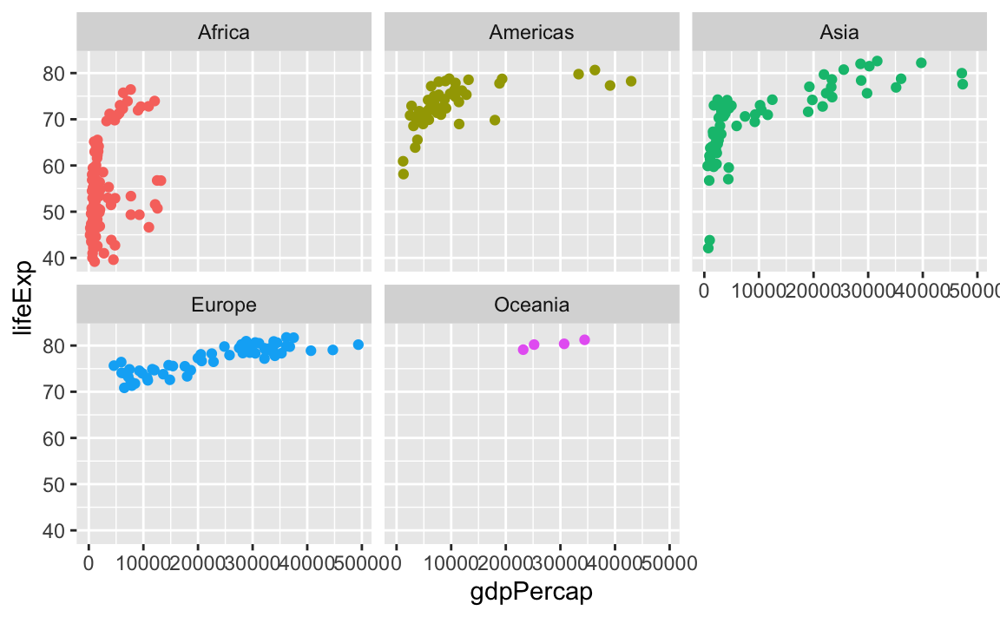
You can control how long the lines are with the ncol and nrow arguments. Like if I want only two plots per row, I’d do this:
ggplot(gapminder_small, aes(x = gdpPercap, y = lifeExp, color = continent)) +
geom_point() +
guides(color = "none") +
facet_wrap(vars(continent), ncol = 2)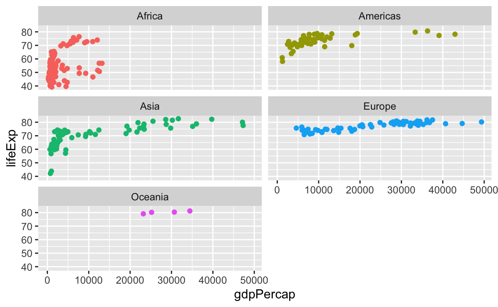
Or if I want only one row, I could do this (or alternatively, I could use ncol = 5—that would do the same thing):
ggplot(gapminder_small, aes(x = gdpPercap, y = lifeExp, color = continent)) +
geom_point() +
guides(color = "none") +
facet_wrap(vars(continent), nrow = 1)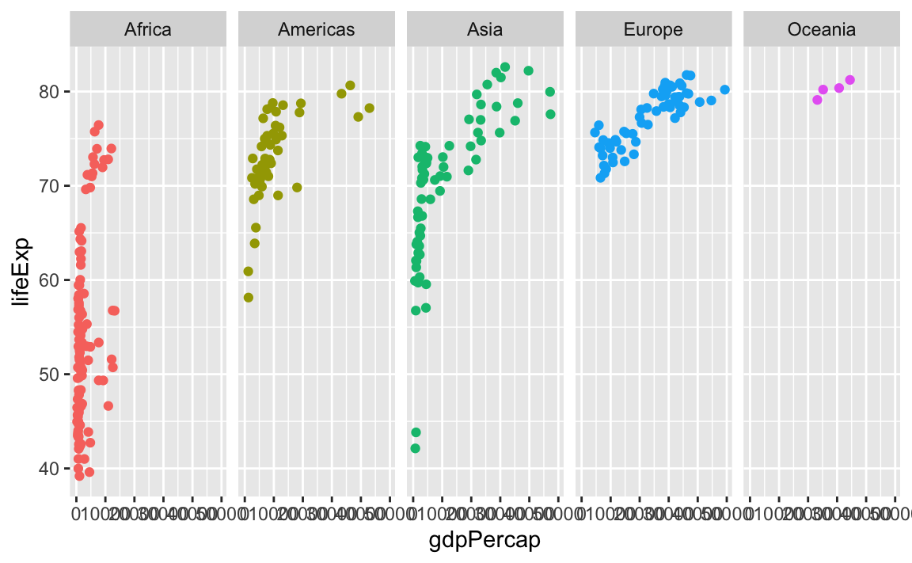
You can facet by multiple variables with facet_wrap(). Instead of adding the labels to the top and the side like with facet_grid(), they get stacked on top of each other:
ggplot(gapminder_small, aes(x = gdpPercap, y = lifeExp, color = continent)) +
geom_point() +
guides(color = "none") +
facet_wrap(vars(year, continent), ncol = 5)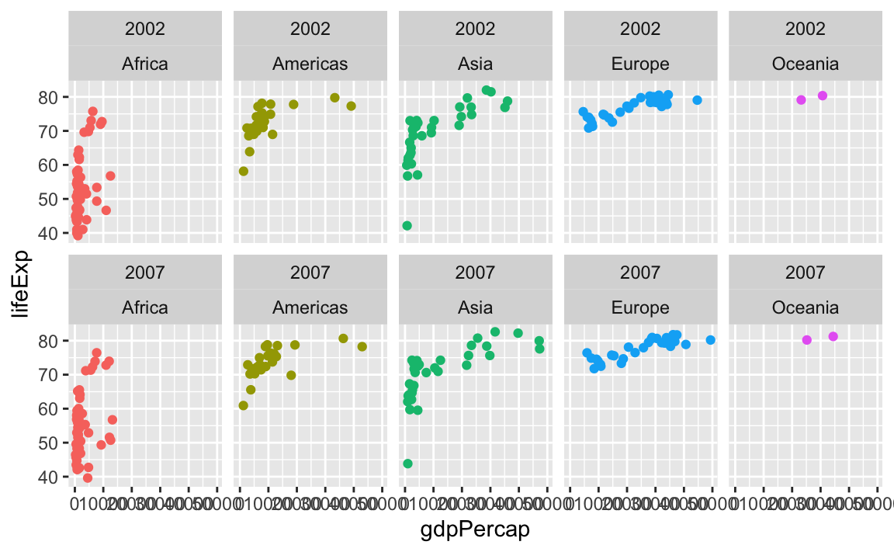
Why do I sometimes see facet_wrap(vars(blah)) and sometimes facet_wrap(~ blah)?
facet_wrap(vars(blah)) and facet_wrap(~ blah) do the same thing. The ~ syntax is older and getting deprecated; the vars() syntax is the nicer newer way of specifying the variables to facet. Use vars(blah).
What’s the difference between the fill and color aesthetics?
This is one of the trickiest things to remember at the beginning of learning ggplot! You learned how to add colors to your plots early on—use the color aesthetic!
library(gapminder)
gapminder_small <- gapminder |>
filter(year >= 2000)
ggplot(gapminder_small, aes(x = gdpPercap, y = lifeExp, color = continent)) +
geom_point() +
scale_x_log10()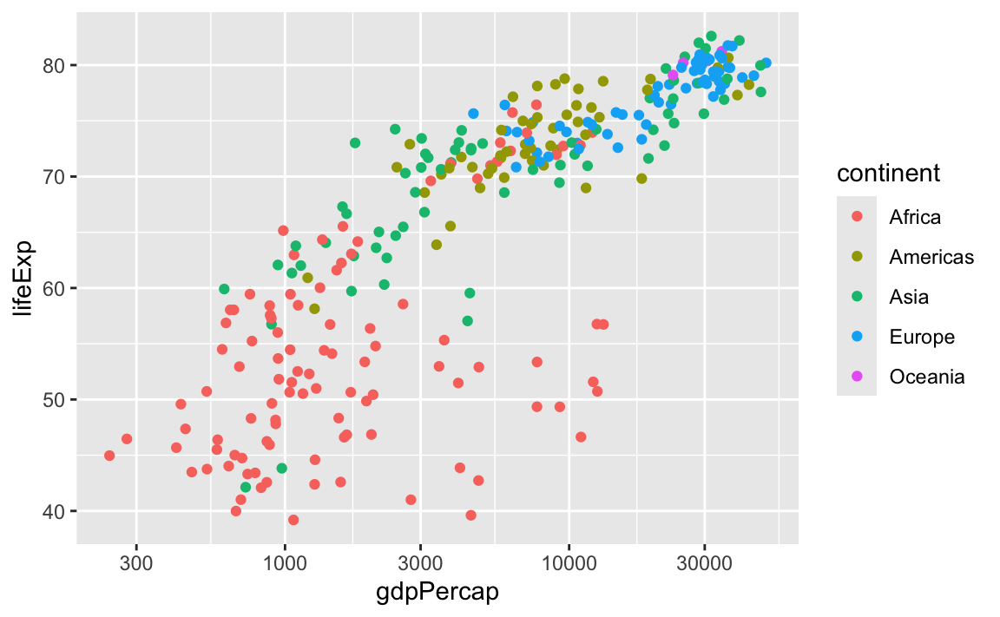
Throughout exercise 3, you did a lot of plotting with geom_col(), and lots of you used color there too, which feels logical! But doing that gives you unexpected results:
gapminder_avg_lifeexp <- gapminder_small |>
group_by(continent) |>
summarize(avg_lifeexp = mean(lifeExp))
ggplot(
gapminder_avg_lifeexp,
aes(x = continent, y = avg_lifeexp, color = continent)
) +
geom_col()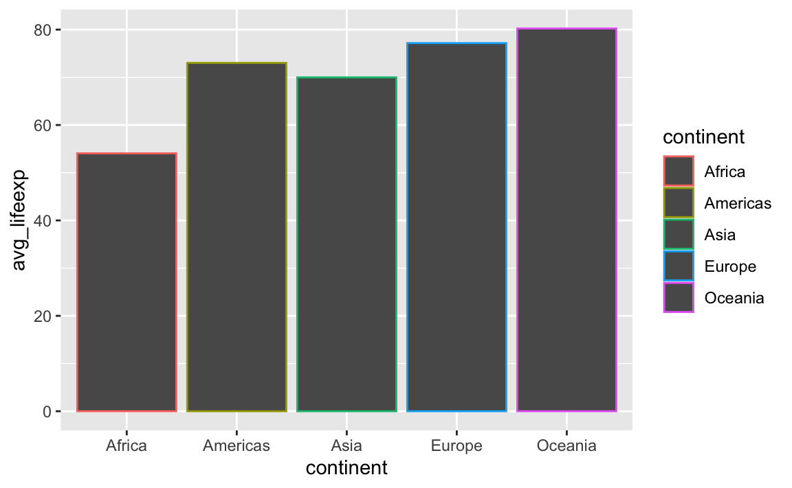
Using color with geom_col() controls the border of the bars, not the bars themselves. This is the case for anything else that involves shapes, like geom_histogram(), geom_area(), and so on. If you want to control the insides of the bars, you should use fill:
ggplot(
gapminder_avg_lifeexp,
aes(x = continent, y = avg_lifeexp, fill = continent)
) +
geom_col()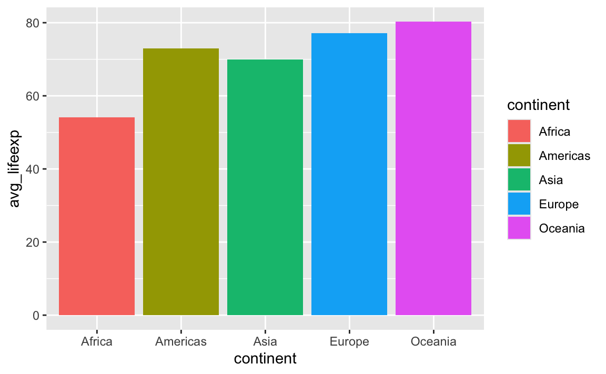
Here’s the best way to remember the difference:
ImportantFill vs. Color
fillcontrols the inside of geomscolorcontrols the outside of geoms
If a geom doesn’t have an inside, like geom_line(), you can only use color—fill won’t do anything because lines don’t have an area to fill. geom_point() is similar—individual points don’t generally have an inside and an outside, so they only use color.*
NoteFilled points
*jklol, saying that points can’t be filled isn’t quite accurate. It’s possible to tell ggplot to use geom_point() with a fillable point.
R and ggplot have 26 possible shapes that you can use, and they’re numbered 0–25. You can see what they are in the documentation if you run ?pch in the console, which (maybe??) stands for “point character” (I think??):
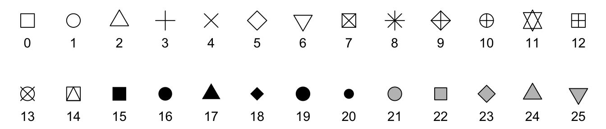
The default shape for geom_point() is 19, which is a solid circle. The shapes 0–14 are all hollow, while shapes 15–20 are solid, and they all are controlled with the color aesthetic. Notice how shapes 21–25 are filled with gray, though? That’s because they’re special. Those shapes can have both color and fill—color controls the border (or stroke), while fill controls the inside.
If you tell geom_point() to use shape 21 (or any of 21–25), you can use both color and fill. One common reason for doing this is adding a little white border around the points to make them more visible:
ggplot(gapminder_small, aes(x = gdpPercap, y = lifeExp, fill = continent)) +
# The stroke argument here controls the thickness of the border
geom_point(shape = 21, stroke = 0.5, size = 3, color = "white") +
scale_x_log10()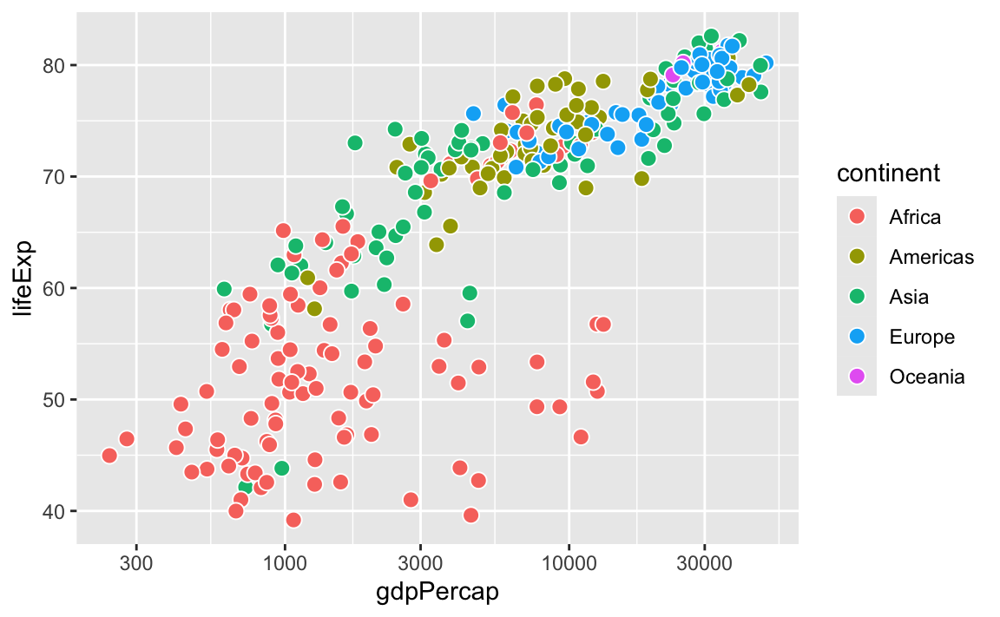
Why did we need to group and summarize before making the Lord of the Rings plots? I didn’t and the plot still worked
In exercise 3, you looked at the count of words spoken in the Lord of the Rings trilogy by species, gender, and film. The exercise helped you with the intuition behind grouping and summarizing and plotting, and you answered different questions by (1) making a smaller summarized dataset and (2) plotting it, like this:
lotr_species_film <- lotr |>
group_by(Species, Film) |>
summarize(total = sum(Words))
# Plot the summarized data
ggplot(
data = lotr_species_film,
mapping = aes(x = Film, y = total, fill = Species)
) +
geom_col()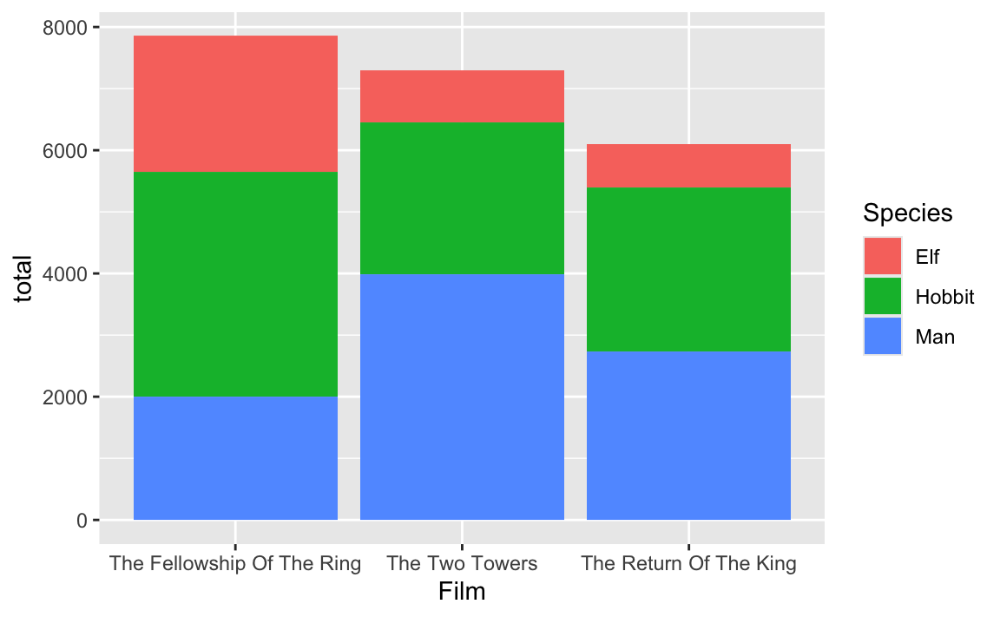
However, some of you noticed that you can get the same plot if you skip the grouping and summarizing and just use the Words column in the lotr dataset:
# Plot the full, ungrouped, unusummarized data
# This looks the same as the earlier plot!
ggplot(
data = lotr,
mapping = aes(x = Film, y = Words, fill = Species)
) +
geom_col()So why go through all the hassle of grouping and summarizing?
The two plots really do look the same, but it’s an optical illusion. In the plot that uses the full lotr data, each of those species-based bar segments is actually two segments—one for each of the genders. You can see this if you add a white border in geom_col():
# Plot the full, ungrouped, unusummarized data
ggplot(
data = lotr,
mapping = aes(x = Film, y = Words, fill = Species)
) +
geom_col(color = "white")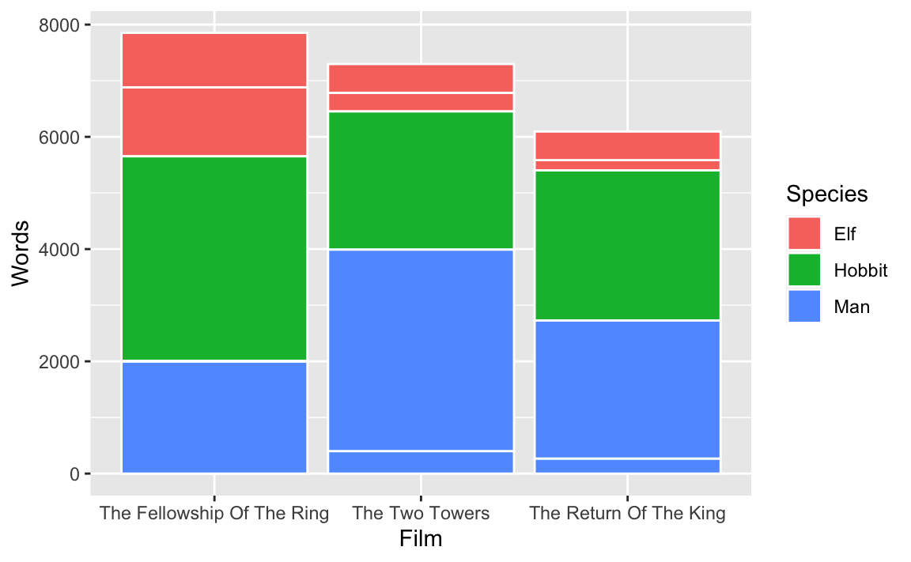
Look at the top left corner, for instance, with the segment for elves in the Fellowship of the Ring. There are two subsegments: one for 1,229 female elf words1 and one for 971 male elf words.2
lotr |>
filter(Species == "Elf", Film == "The Fellowship Of The Ring")
## # A tibble: 2 × 4
## Film Species Gender Words
## <fct> <chr> <chr> <dbl>
## 1 The Fellowship Of The Ring Elf Female 1229
## 2 The Fellowship Of The Ring Elf Male 971When you group by film and species and then summarize, you collapse all the other rows into just film and species, so the male and female counts get aggregated into one single number. There’s only one segment for elves in the Fellowship of the Ring, and it’s 2,220 words (1,229 + 971):
# Plot the summarized data
ggplot(
data = lotr_species_film,
mapping = aes(x = Film, y = total, fill = Species)
) +
geom_col(color = "white")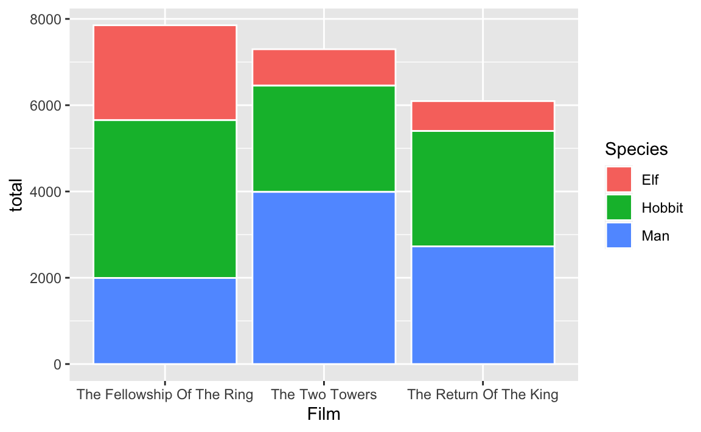
# Get the count of elves in Fellowship
lotr_species_film |>
filter(Species == "Elf", Film == "The Fellowship Of The Ring")
## # A tibble: 1 × 3
## # Groups: Species [1]
## Species Film total
## <chr> <fct> <dbl>
## 1 Elf The Fellowship Of The Ring 2200So yes, in this one case, not grouping and summarizing worked, but only because the bar segments were stacked on top of each other with no border. If you used a different geom or had a border, you’d get weird results.
In general it’s best to reshape the data properly before plotting it so you don’t have to rely on optical illusions to get the plots you want.
How do I know if/when I should put variables as x or fill or as facets, etc?
In your last plot, you had to show film, species, and gender all at the same time. You could have done this six different ways if you’re just using dodged columns and facets!
ggplot(lotr, aes(x = Film, y = Words, fill = Species)) +
geom_col(position = "dodge") +
facet_wrap(vars(Gender)) +
theme(legend.position = "bottom")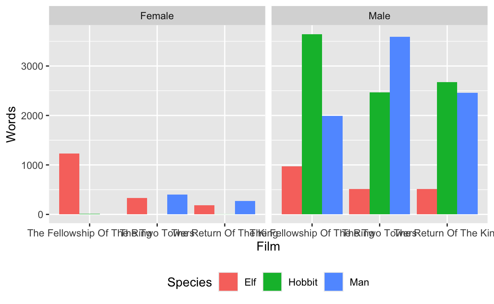
ggplot(lotr, aes(x = Film, y = Words, fill = Gender)) +
geom_col(position = "dodge") +
facet_wrap(vars(Species)) +
theme(legend.position = "bottom")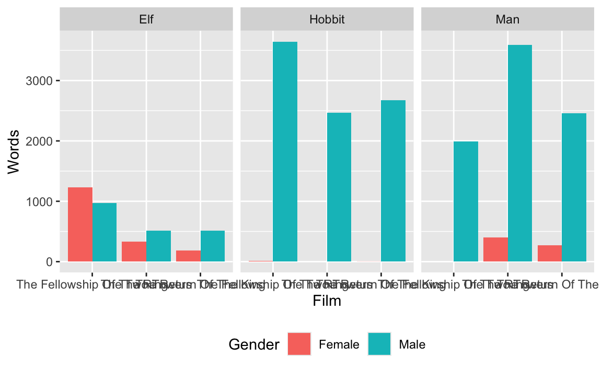
ggplot(lotr, aes(x = Gender, y = Words, fill = Film)) +
geom_col(position = "dodge") +
facet_wrap(vars(Species)) +
theme(legend.position = "bottom")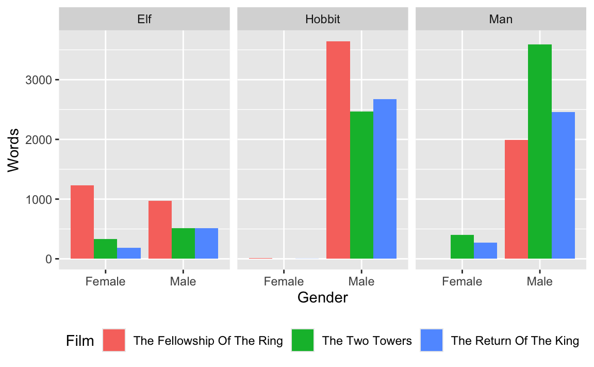
ggplot(lotr, aes(x = Gender, y = Words, fill = Species)) +
geom_col(position = "dodge") +
facet_wrap(vars(Film)) +
theme(legend.position = "bottom")
ggplot(lotr, aes(x = Species, y = Words, fill = Gender)) +
geom_col(position = "dodge") +
facet_wrap(vars(Film)) +
theme(legend.position = "bottom")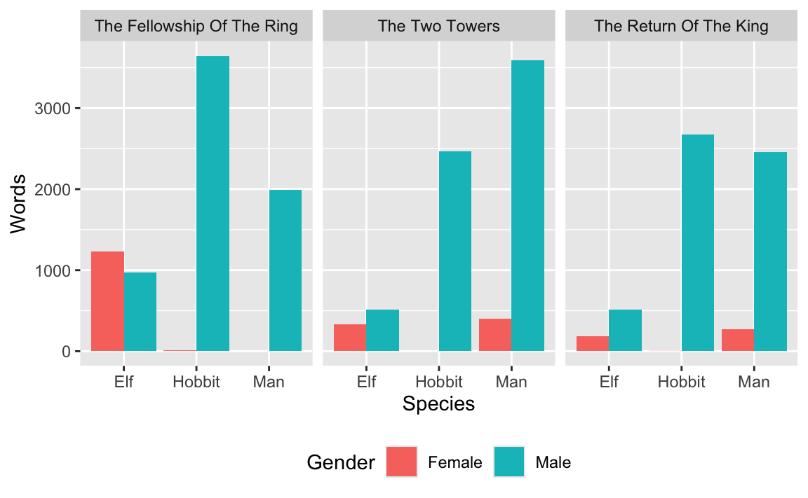
ggplot(lotr, aes(x = Species, y = Words, fill = Film)) +
geom_col(position = "dodge") +
facet_wrap(vars(Gender)) +
theme(legend.position = "bottom")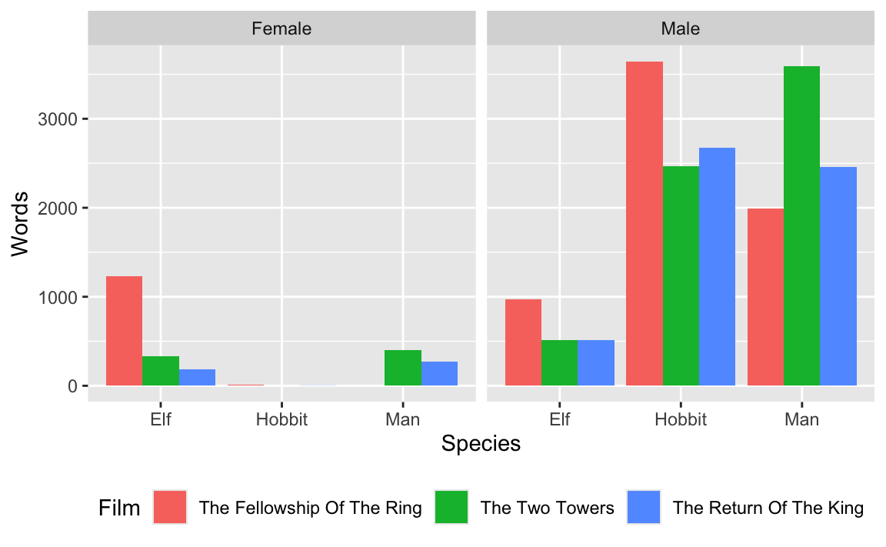
Which of these is right? Is there a right one?
None of them are right or wrong!
It all depends on the story you’re telling. The first plot (x = Film, fill = Species, faceted by Gender) might be helpful if you’re telling a story about gender imbalance in The Lord of the Rings films, since the facets make it very clear that there’s a big difference between genders. The fourth plot (x = Gender, fill = Species, faceted by Film) might be helpful if you’re tracking species-based speaking times across the three films.
Why doesn’t R work with wide data? When would wide data be useful?
R does work with wide data, and there’s nothing fundamentally wrong with wide data. You use wide data all the time!
If you’ve ever made a spreadsheet like this, you’ve used wide data:
Code
withr::with_seed(1234, {
profits_wide <- matrix(
sample(111:999, 24, replace = TRUE),
nrow = 4,
dimnames = list(
c("North", "South", "East", "West"),
as.character(2020:2025)
)
) |>
as_tibble(rownames = "Region")
})profits_wide
## # A tibble: 4 × 7
## Region `2020` `2021` `2022` `2023` `2024` `2025`
## <chr> <int> <int> <int> <int> <int> <int>
## 1 North 394 755 836 994 684 322
## 2 South 958 510 712 380 114 305
## 3 East 211 208 436 492 771 621
## 4 West 733 213 189 294 662 589Again, there’s nothing wrong with that! It’s a perfectly valid way of storing and reading data—you’ll see stuff like that in reports and papers all the time.
However, it’s tricky to use wide data like that for data analysis or for plotting. What if you want the average profits per region? You need to calculate the row averages, with something like this:
profits_wide |>
mutate(average = (`2020` + `2021` + `2022` + `2023` + `2024` + `2025`) / 6)
## # A tibble: 4 × 8
## Region `2020` `2021` `2022` `2023` `2024` `2025` average
## <chr> <int> <int> <int> <int> <int> <int> <dbl>
## 1 North 394 755 836 994 684 322 664.
## 2 South 958 510 712 380 114 305 496.
## 3 East 211 208 436 492 771 621 456.
## 4 West 733 213 189 294 662 589 447.If you want the average profits per year, you’d need to do something like this:
profits_wide |>
summarize(
avg_2020 = mean(`2020`),
avg_2021 = mean(`2021`),
avg_2022 = mean(`2022`),
avg_2023 = mean(`2023`),
avg_2024 = mean(`2024`),
avg_2025 = mean(`2025`)
)
## # A tibble: 1 × 6
## avg_2020 avg_2021 avg_2022 avg_2023 avg_2024 avg_2025
## <dbl> <dbl> <dbl> <dbl> <dbl> <dbl>
## 1 574 422. 543. 540 558. 459.Both of those approaches work, but it’s tedious!
And if you want to plot regional profits over time, good luck. There’s no easy way to do that with ggplot.
The long/tidy version of that wide data would look like this, with a column named “Region” and a column named “Year” and a column named “Profit”:
profits_long <- profits_wide |>
pivot_longer(-Region, names_to = "Year", values_to = "Profit")
profits_long
## # A tibble: 24 × 3
## Region Year Profit
## <chr> <chr> <int>
## 1 North 2020 394
## 2 North 2021 755
## 3 North 2022 836
## 4 North 2023 994
## 5 North 2024 684
## 6 North 2025 322
## 7 South 2020 958
## 8 South 2021 510
## 9 South 2022 712
## 10 South 2023 380
## # ℹ 14 more rowsNow if we want the average profit by region, we can group by region and summarize:
profits_long |>
group_by(Region) |>
summarize(avg_profit = mean(Profit))
## # A tibble: 4 × 2
## Region avg_profit
## <chr> <dbl>
## 1 East 456.
## 2 North 664.
## 3 South 496.
## 4 West 447.If we want the average profit by year, we can group by year and summarize:
profits_long |>
group_by(Year) |>
summarize(avg_profit = mean(Profit))
## # A tibble: 6 × 2
## Year avg_profit
## <chr> <dbl>
## 1 2020 574
## 2 2021 422.
## 3 2022 543.
## 4 2023 540
## 5 2024 558.
## 6 2025 459.It’s the same code for both! The only difference is the grouping.
We can plot it easily too:
ggplot(profits_long, aes(x = Year, y = Profit, color = Region)) +
geom_line(aes(group = Region))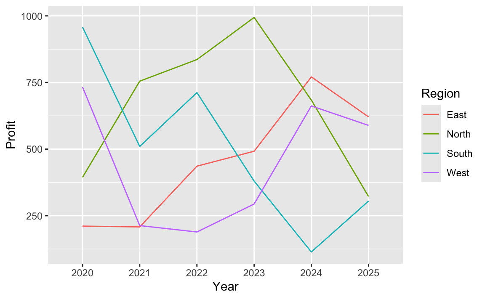
You can even switch back and forth between wide and long depending on what you need. For example, we’ll use the gapminder data to find the average life expectancy in Africa in 1952 and 2007:
library(gapminder)
gapminder |>
filter(continent == "Africa", year %in% c(1952, 2007)) |>
group_by(year) |>
summarize(avg_lifeExp = mean(lifeExp))
## # A tibble: 2 × 2
## year avg_lifeExp
## <int> <dbl>
## 1 1952 39.1
## 2 2007 54.8That’s neat and easy, since we worked with tidy/long data. But what if we want to find the difference between those two averages? We can’t really use mutate() here, because the values are in one row, not in two different columns.
We can pivot this data wider so that we have a column for life expectancy in each year, then use mutate() to find the difference:
gapminder |>
filter(continent == "Africa", year %in% c(1952, 2007)) |>
group_by(year) |>
summarize(avg_lifeExp = mean(lifeExp)) |>
pivot_wider(
names_from = year,
values_from = avg_lifeExp,
names_prefix = "lifeExp_"
) |>
mutate(difference = lifeExp_2007 - lifeExp_1952)
## # A tibble: 1 × 3
## lifeExp_1952 lifeExp_2007 difference
## <dbl> <dbl> <dbl>
## 1 39.1 54.8 15.7